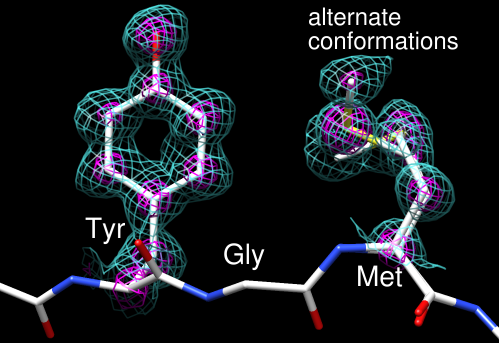
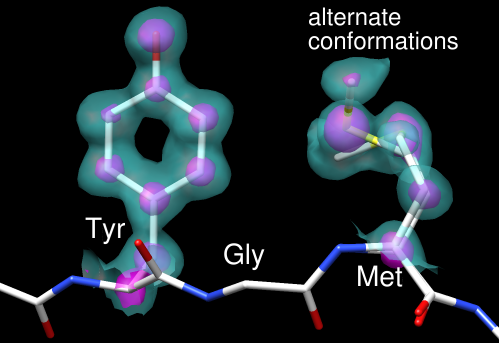

| A: |  |
| B: |  |
These images show part of Protein Data Bank entry 2fma, the Alzheimer's amyloid precursor protein (APP) copper-binding domain, along with its electron density map (2fo-fc) available from the Electron Density Server.
The recipe here is just an example; there are usually many routes to the same or similar results. See also: presets, tips on preparing images, and on the Chimera Web site, the Image Gallery and Guide to Volume Display
Start Chimera and enlarge the window as desired. Show the Command Line (for example, with Favorites... Command Line).
Fetch 2fma from the Protein Data Bank, then apply interactive preset #2 to display all atoms with heteroatom color-coding:
Command: open 2fmaFetch the density map for this structure from the Electron Density Server:
Command: preset apply int 2
Command: open edsID:2fmaClick the little eye icon on the Volume Viewer dialog to hide the electron density for now. Move and scale using the mouse and the Side View as you wish throughout the tutorial.
Since one goal was to show an example of alternate conformations, residues with atoms in alternate conformations were identified by labeling:
Command: rlab @.aMet-170 and Glu-183 have alternate conformations; a stretch of residues near Met-170 was chosen for the figure. Show just residues 168-170 along with the backbone of the flanking residues:
Command: ~rlabChange to the stick representation and make the sticks thinner:
Command: show :168-170
Command: focus
Command: disp :167,171@n,ca,c,o
Command: rep stickSelect the sidechains only of Tyr-168 and Met-170; this selection will be used to limit the density display to a zone.
Command: setattr m stickScale 0.5
Command: sel :168,170 & without CA/C1'The without CA/C1' part is shorthand for the menu entry Select... Structure... side chain/base... without CA/C1'. All terminal menu entries under Select... Structure can be used as command-line specifiers.
In Volume Viewer,
The figures were saved as PNG files with the same number of pixels as the Chimera window by using File... Save Image with default settings.
Saving a session (see the File menu) right before or after saving the image is recommended if you might need to regenerate the same or a similar figure later, say at a different resolution or with modified coloring. The session will include the position at the time of session saving, named session-start. This is useful when you restore a session and move things around but then want to restore its initial position:
Command: reset session-start
{kind=link}
{kind=link}